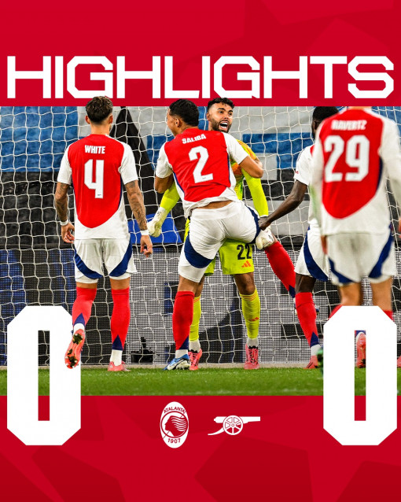

ការសង្គ្រោះប៉េណាល់ទីរបស់ Raya យប់មិញអស្ចារ្យហ្នឹងវីរបុរស Arsenal ម្នាក់នេះ
សុក្រ, 20 កញ្ញា 2024 07:20Atalanta និង Arsenal បញ្ចប់ត្រឹមលទ្ធផលស្មើគ្នា០-០ សម្រាប់ការប្រកួតបើកឆាក UEFA Champions League ទទួលបានម្នាក់១ពិន្ទុក្នុងការប្រកួតលើទឹកដីរបស់ក្រុមអ៊ីតាលី។ ក្នុងការប្រកួតនោះគេមើលឃើញថា អ្នកចាំទីរបស់ក្រុមផ្ញៀវ David Raya បានសង្គ្រោះបាល់ប៉េណាល់ទី និងបាល់បន្ថែមប៉េណាល់ទីនោះបានល្អមែនទែន។
David Raya អ្នកចាំទីរបស់ Arsenal បានសង្គ្រោះបាល់ចំនួនពីរលើកពីការស៊ុតប៉េណាល់ទី១លើក និងបាល់តែតពេលឡងត្រឡប់មកវិញហើយ តែតបន្ថែមដោយខ្សែប្រយុទ្ធ Reteguiរបស់ក្រុម Atalanta មួយលើកទៀត ប៉ុន្តែត្រូវបាន Devid Raya ជួយបានទាំងពីរ។

ក្រុមទាំងពីរមានការស៊ុតគ្នាទៅវិញទៅមក បើទោះជាមានការស៊ុតប៉េណាល់ទីក៏ដោយក៏នៅតែមិនអាចមានគ្រាប់បាល់។ គេមើលឃើញថានាទីទី៥០ខ្សែការពាររបស់ក្រុម Arsenal បានទាញខ្សែប្រយុទ្ធរបស់ក្រុមម្ចាស់ផ្ទះ Atalanta ហើយបង្កើតឱកាសឲ្យក្រុមម្ចាស់ផ្ទះមានបាល់ពិន័យ១១ម៉ែត្រ។ យ៉ាងណាក្រោយពេលអាជ្ញាកណ្ដាលសម្រេចផ្ដល់បាល់ពិន័យនោះ Raya ហក់ទះយ៉ាងល្អ ហើយពេលបាល់នោះឡងត្រឡប់មកកាន់ខ្សែប្រយុទ្ធRetegui វិញគេក៏តែតបន្ថែមប៉ុន្តែត្រូវបាន Raya សង្គ្រោះបាល់នោះបានម្ដងទៀត។
ក្រឡេកទៅមើលអតីតកាលការសង្គ្រោះបាល់នេះពិតជាល្អខ្លាំងណាស់ ដែលវាពិតជាការសង្គ្រោះបាល់ដ៏អស្ចារ្យដូចកាលការសង្រ្គោះរបស់អតីតអ្នកចាំាទី និងវីរបុរសរបស់ Arsenal លោក Devid Seaman ពីការស៊ុតរបស់ខ្សែប្រយុទ្ធ Paul Peschisolido នៃក្រុម Sheffield United កាលឆ្នាំ២០០៣ វគ្គពាក់កណ្ដាលផ្ដាច់ព្រ័ត្រ FA Cup យ៉ាងដូច្នេះដែរ។

- ដើម្បីចង់ដឹងថាតើការសង្រ្គោះនោះវាអស្ចារ្យយ៉ាងណាសូមទស្សនាវីដេអូ៖
- វីដេអូកាលលោក Devid Seaman សង្គ្រោះកាលឆ្នាំ ២០០៣៖
ប្រភព៖ BBC Daro Ly
ពាក្យទាក់ទង
អត្ថបទសំខាន់ Arsenal វីដេអូឃ្លីប ព័ត៌មានកីឡាអន្តរជាតិ-International Sport News Sports